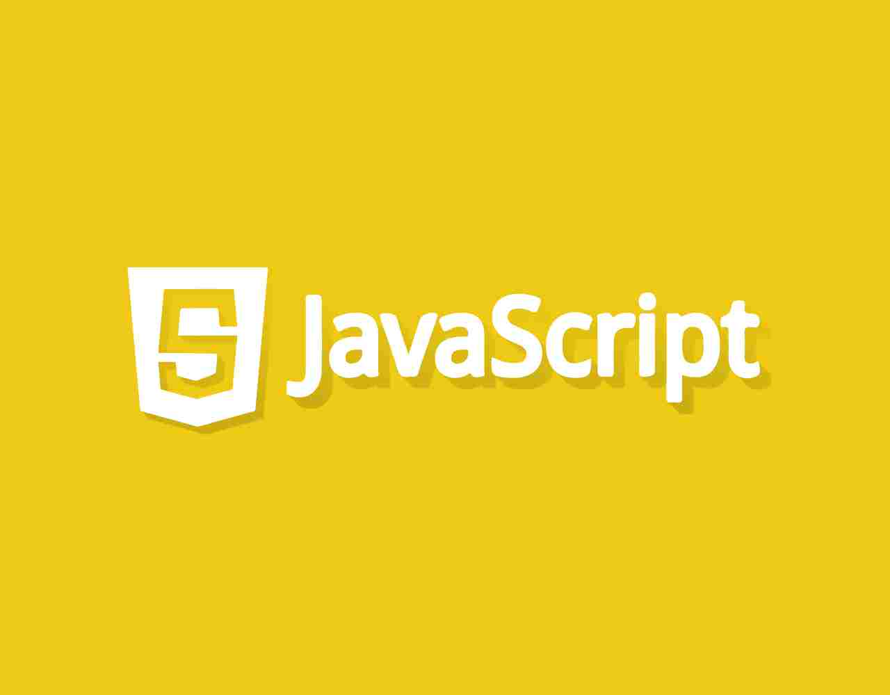

Языки программирования
JS поддерживают все популярные браузеры. Во frontend-части сайтов язык используют для создания интерактива (анимаций, всплывающих форм, автозаполнения), так как он связан с HTML и CSS и может ими манипулировать. В backend-части с языком JavaScript работают на платформе Node.js. С ее помощью, например, разрабатывают серверные веб-приложения и подключают библиотеки. В поисковике Google на JavaScript работает строка автозаполнения, а Netflix, Uber, eBay используют его в своем backend. Уже 6 лет JS — самый популярный язык среди разработчиков по версии GitHub.
